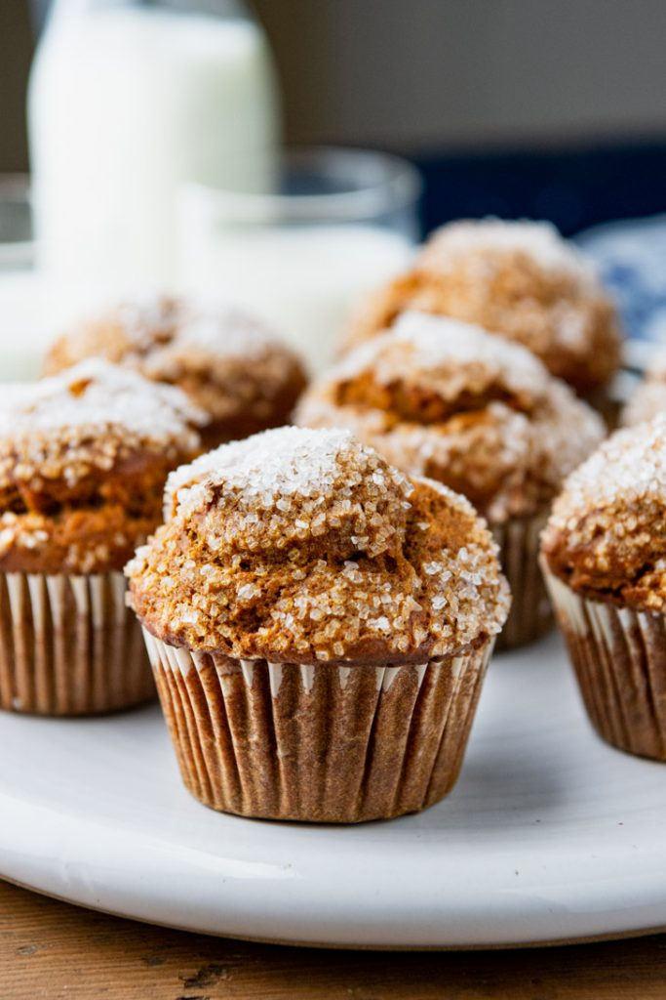

<!DOCTYPE html>
<html lan="en"></html>

<head>
  <meta charset="utf-8">
  <title>Pumpkin Muffins</title>
</head>

<body>
  <p><h1>Pumpkin Muffins</h1></p>
  
  
  <p><h3>Description</h3></p>
    <p>These easy pumpkin muffins aren't just for fall! They're so big, fluffy, and moist, your family will want to 
        enjoy them all year long. Best of all, the muffins are very quick to stir together with one bowl and 10 minutes of prep. 
        You'll never need to rely on a boxed mix again!</p>

  <p><h3>Ingredients</h3></p>
    <p><ul>
        <li>¾ cup granulated sugar</li>
        <li>½ cup packed light brown sugar</li>
        <li>½ cup vegetable oil</li>
        <li>2 large eggs</li>
        <li>1 (15 ounce) can pure pumpkin puree (not pumpkin pie filling) (about 1 ½ cups</li>
        <li>1 teaspoon vanilla extract</li>
        <li>1 teaspoon baking soda</li>
        <li>½ teaspoon baking powde</li>
        <li>¾ teaspoon salt</li>
        <li>2 cups all-purpose flour, sifted</li>
        <li>1 ¼ teaspoons ground cinnamo</li>
        <li>½ teaspoon ground ginger</li>
        <li>½ teaspoon ground nutmeg</li>
        <li>½ teaspoon ground clove</li>
        <li>¼ teaspoon ground allspice</li>
        <li>Coarse sugar, for topping</li>
    </ul></p>

  <p><h3>Steps</h3></p>
    <p><ol>
        <li>Preheat oven to 375°F. Line 12 muffin cups with paper liners. Set aside.</li>
        <p></p>
        <li>In a large bowl, whisk together the granulated sugar, brown sugar, oil, and eggs. Add the pumpkin and vanilla extract; whisk to combine. Sprinkle baking soda, baking powder, and salt over top. Whisk until well blended.</li>
        <p></p>
        <li>Stir in the flour, cinnamon, ginger, nutmeg, cloves, and allspice; be careful not to over-mix.</li>
        <p></p>
        <li>Divide the batter evenly among the prepared muffin cups. Each cup will be really full, which yields those tall muffin tops</li>
        <p></p>
        <li>Sprinkle about 1 teaspoon of coarse sugar on top of each muffin. It seems like a lot of sugar for each muffin, but this is what gives them those bakery-style sugar-crusted tops!</li>
        <p></p>
        <li>Bake the muffins for 20-25 minutes, or until a toothpick inserted in a muffin comes out clean.</li>
        <p></p>
        <li>Transfer to wire racks to cool.</li>
    </ol></p>

  

</body>
